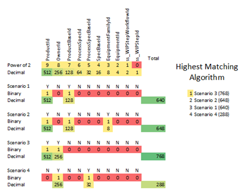

Alle Seiten bestehen aus Abschnitten, über die Sie die Kriterien suchen und definieren können, die zum Bestimmen des Verhaltens von Losen im Verlauf des Fertigungsprozesses verwendet werden. Sie können die Matrixmodellierungsseiten verwenden, um neue Instanzen anzuzeigen, zu bearbeiten, zu löschen oder hinzuzufügen. Matrixseiten bestehen hauptsächlich aus folgenden Abschnitten:
| • | Such- und Auswahlbereich |
| • | Kriterienbereich |
| • | Detailbereich |
Diese sechs Matrixseiten haben ein anderes Seitenlayout, basierend auf der neuesten Benutzeroberflächenerweiterung:
| • | Pauschalversuchsmatrix |
| • | Ausrüstungsmatrix |
| • | Parametermatrix |
| • | Rezeptmatrix |
| • | Werkzeugplanmatrix |
| • | Matrix für Umlaufbestandsdateneinrichtung |
Das Seitenlayout für diese Seiten umfasst die folgenden Abschnitte:
| • | Filter- und Auswahlbereich |
| • | Kriterienbereich (wird als Popup angezeigt) |
| • | Detailbereich (erscheint als Popup) |
Die restlichen Matrixseiten bleiben bis zur zukünftigen Erweiterung mit der vorherigen Matrix-Benutzeroberfläche erhalten.
| Hinweis: | Die Beschreibungen und Verfahren in diesem Abschnitt gelten für alle Matrixmodellierungsobjekte. Die jeweiligen Beschreibungen und Definitionen finden Sie auf den einzelnen Matrixseiten. |
Der Such- und Auswahlbereich ermöglicht Ihnen die Suche nach Matrixinstanzen, die den von Ihnen definierten Kriterien entsprechen. Jede Matrixinstanz verwendet ihren eigenen Satz mit Suchkriterien.
Klicken Sie auf die Schaltfläche "Aktualisieren" unter der Tabelle, um Ihre Suche auszuführen. Die Ergebnisse werden in der Tabelle angezeigt.
Bei den neuen erweiterten Matrixseiten wurde der Suchbereich durch einen Filterabschnitt ersetzt. Der Filterabschnitt wird als Ausklappfenster auf der linken Seite der Matrixseiten angezeigt. In diesem Abschnitt können Sie nach Matrixinstanzen suchen, die den von Ihnen definierten Kriterien entsprechen. Klicken Sie auf die Schaltfläche Anwenden unter dem Filterabschnitt, um Ihre Suche auszuführen. Die Ergebnisse werden in der Tabelle angezeigt.
Wenn Sie zum ersten Mal zur neuen Matrixseite navigieren, deaktiviert die rechte Befehlsleiste einige der Schaltflächen wie "Bearbeiten", "Löschen", "Details anzeigen" und "Protokoll". Um diese Schaltflächen zu aktivieren, müssen Sie eine Instanzzeile in der Tabelle auswählen.
| Hinweis: | Alle Matrixseiten und Instanzen könne je nach eigener Funktionalität unterschiedliche Suchkriterienfelder enthalten. |
Sie können eine Matrix basierend auf bestimmten Feldern mit bestimmten Werten suchen. Geben Sie z. B. "PA-004" in ein Produktsuchfeld ein, um eine Matrix mit dem Produktkriterium "PA-004" zu finden. Sie können alle Suchfelder leer lassen, wenn Sie alle Matrizen anzeigen möchten.
Wenn Sie Filterkriterien für ein Matrixmodellierungsobjekt angeben, verwendet die Anwendung während der Laufzeit den höchsten übereinstimmenden Algorithmus, um die Datenbank so zu durchsuchen, dass die besten Datensätzen ausgegeben werden. Der Algorithmus weist jedem angegebenen Kriterium abhängig von seiner Wichtigkeit einen binären Wert zu.
Die Matrixmodellierungsseiten haben unterschiedliche Sätze von Filterkriterien. Die Reihenfolge der Kriterienfelder auf der Seite gibt die Bedeutung der einzelnen Kriterien an. Die Felder werden nach binärem Gewicht sortiert. Das erste Kriterium hat den höchsten Wert, das nächste Kriterium in der Liste weist einen kleineren Wert auf usw.
Auf der Seite "Ausrüstungsmatrix" ist der binäre Wert, der "Produkt" zugewiesen wurde, höher als der von "Prozessspez.". "Prozessspez." ist ein höherer Wert zugewiesen als "Produktzweig" usw., wobei "Spez." den kleinsten Wert aufweist. Beispiel: die binären Werte für Produkt = 16, Prozessspezifikation = 8, Produktlinie = 4, Eigentümer = 2 und Spez. = 1. Wenn mehrere Einträge zurückgegeben werden, wird der erste aufgelistete Datensatz in der Tabelle am häufigsten verwendet. Der erste aufgelistete Datensatz ist der Datensatz mit dem höchsten binären Gesamtwert.
Sie können bei Bedarf mindestens ein Filterkriterium angeben, um die Parameter des Modellierungsobjekts zu definieren. Wenn Sie mehr als ein Suchkriterium angeben, gibt die Anwendung Ergebnisse basierend auf der "oder NULL"-Bedingung zurück, bei der sowohl einzelne als auch übereinstimmende Datensätze zurückgegeben werden. Wenn Sie z. B. PN-Kriterien und Prozessspezifikationskriterien angegeben haben, gibt die Anwendung übereinstimmende Datensätze zurück:
| • | Sowohl die PN als auch die Prozessspezifikation |
| • | Nur die PN und |
| • | Nur die Prozessspezifikation |

Vorgehensweise zur Verwendung des Such- und Auswahlbereichs zum Suchen von Instanzen
Gehen Sie folgendermaßen vor, um Instanzen eines Matrixobjekts zu suchen und auszuwählen:
| 1. | Öffnen Sie die Matrixmodellierungsseite. Beispiel: Ausrüstungsmatrix. Die Seite "Matrixmodellierungsobjekt" wird angezeigt. |
| 3. | Klicken Sie in der Tabelle "Auswahl" in der Zeile mit dem Datensatz auf  . Die Anwendung füllt die Matrixobjektseite mit den Informationen aus dieser Instanz aus. . Die Anwendung füllt die Matrixobjektseite mit den Informationen aus dieser Instanz aus. |
Vorgehensweise zur Verwendung des Filter- und Auswahlbereichs zum Suchen von Instanzen
Gehen Sie folgendermaßen vor, um Instanzen eines Matrixobjekts zu suchen und auszuwählen:
| 1. | Öffnen Sie die Matrixmodellierungsseite über Modellierung > Matrix. Die Anwendung zeigt die ausgewählte Matrix-Seite an. |
| 2. | Geben Sie im Ausklappfenster "Filter" die Kriterien in die angegebenen Felder ein. Klicken Sie auf Übernehmen. Die Anwendung zeigt die Instanzen an, die den angegebenen Kriterien in der Tabelle "Auswahl" entsprechen. |
| 3. | Wählen Sie die Zeile aus, die die Instanz enthält, die Sie anzeigen, bearbeiten oder löschen möchten. Klicken Sie in der Befehlsleiste auf die Schaltfläche, um das Popup für die Aktion anzuzeigen, die Sie abschließen möchten. |
Im Bereich "Kriterien" können Sie Kriterien auswählen, um eine neue Instanz zu definieren oder um der Instanz, die Sie im Such- und Auswahlbereich angegeben haben, zusätzliche Kriterien hinzuzufügen.
Im Detailbereich können Sie die Instanz näher definieren, indem Sie einen Namen für das Matrixobjekt eingeben und bei Bedarf weitere erforderliche und optionale Informationen für den jeweiligen Matrixobjekttyp eingeben.
| Hinweis: | Wenn Sie keinen Namen angeben und für dieses Matrixobjekt ein Nummerierungsregelobjekt modelliert wurde, füllt die Anwendung dieses Feld automatisch aus, wenn Sie die Instanz speichern. Informationen zur Verwendung der Nummerierungsregeln zum Benennen von Matrixobjektinstanzen finden Sie unter Verwenden von Nummerierungsregeln zur automatischen Benennung von Instanzen. |
Wenn Sie keinen Namen für die Instanz angeben und für dieses Matrixobjekt ein Nummerierungsregelobjekt modelliert wurde, füllt die Anwendung dieses Feld automatisch aus, sobald Sie die Instanz speichern. Zum Verwenden dieser Funktion müssen Sie ein Nummerierungsregelobjekt mit dem folgenden Benennungsmuster erstellen:
MatrixnameChanges
Dabei ist Matrixname der Name des Matrixobjekts.
Wenn Sie z. B. eine Nummerierungsregel für Objekte der Ausrüstungsmatrix erstellen möchten, würden Sie ein Nummerierungsregelobjekt mit dem Namen "EquipmentMatrixChanges" erstellen. Wenn Sie anschließend neue Instanzen des Objekts der Ausrüstungsmatrix erstellen und für diese keinen Namen angeben, generiert die Anwendung einen eindeutigen Namen für jede Instanz wie vom Nummerierungsregelobjekt angegeben. Informationen zu Nummerierungsregelobjekten finden Sie im Opcenter Execution Core Modeling-Benutzerhandbuch.